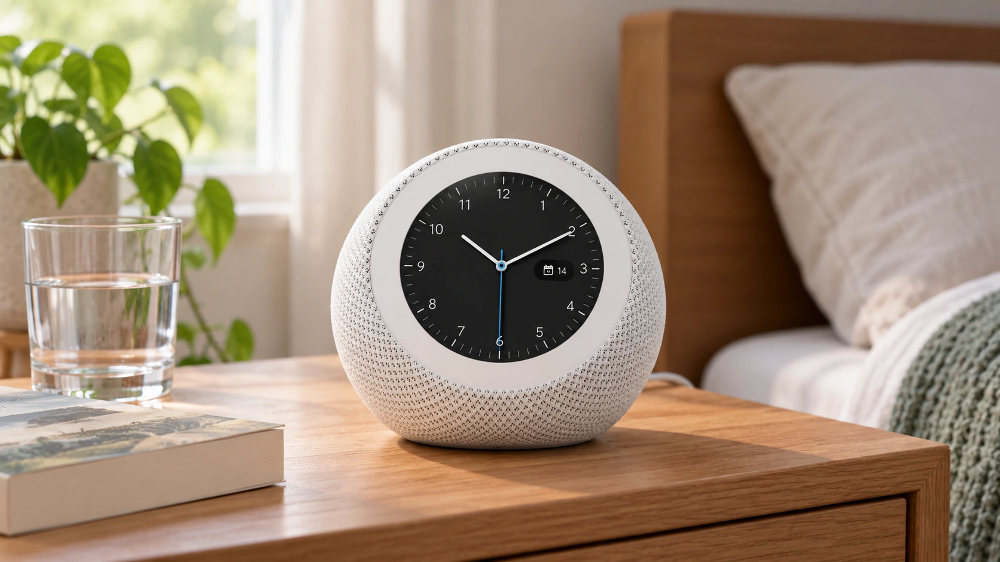

Amazon Adds an Alexa Clock and Photo Frame as Devices Unit Cuts Jobs
Five new Alexa devices extend Amazon’s home hardware range. The rollout comes as its devices and services unit reduces staff.

Amazon introduced five Alexa-powered devices Wednesday, adding a bedside clock and a photo frame to its home hardware range while refreshing its speakers and largest smart display. The launch extends the company's AI assistant into more everyday routines, from setting alarms to finding family pictures. It also arrives alongside a reduction in staff in the business developing those products.
Reuters reported that the devices and services unit cut about 250 jobs, primarily in software development. Amazon confirmed eliminating a small number of roles and said the changes would improve efficiency and alignment with its product plans. The company did not publicly provide a detailed breakdown of the affected teams or product budgets.
The two developments show expansion of a product range and a smaller workforce happening together. They do not establish that AI replaced those particular employees or that any one new device is profitable. TTN's analysis of AI monetization explains the wider distinction between putting a technology into more products and demonstrating the financial return.
The clock takes Alexa to the bedside
Echo Time, available Wednesday for $199.99, is a spherical smart clock with a 3.2-inch circular touchscreen and no camera. Amazon says its optional sleep-sensing system combines presence detection, temperature information and ultrasound to support an alarm that can wake users during lighter sleep within a selected window. Those are the manufacturer's descriptions, rather than results of an independent TTN sleep study.
The absence of a camera does not mean the product has no sensors or microphones. Amazon says sleep sensing is opt-in and can be disabled through settings or by muting the microphones. That distinction is useful for a bedroom device: the relevant choice concerns the particular sensing functions and controls, rather than the presence of a screen alone.
The Alexa Photo Frame starts at $199.99 and uses a 10-inch touchscreen connected to Amazon Photos. Its announced functions include voice-based photo searches, automatic updates and voice notes attached to pictures. Amazon says some features require Alexa+, which is included with Prime, and the frame includes 90 days of Alexa+. Hardware purchase and continuing service access should therefore be assessed separately.
Speakers gain connections and a camera
The new $99.99 Echo Dot includes a smart-home hub supporting Zigbee, Matter and Thread, plus an eero Wi-Fi extender. Amazon says its custom AZ3 chip helps process some AI functions on the device. Those specifications describe capabilities and compatibility; they do not mean the speaker replaces every router or works with every connected appliance without additional setup.
The $249.99 Echo Studio with Home Camera adds visual input to the speaker range. Amazon describes recognizing objects held up to the camera and checking a room through the Alexa app. The business implication is a broader set of tasks for the assistant, but useful performance still depends on recognition accuracy and reliable completion. Our guide to the cost of completed AI tasks explains why usage alone does not settle the economics.
The largest screen remains a preorder
Echo Show 16 starts at $499.99, with a $569.99 Nanomatte version. Amazon opened preorders Wednesday and says shipping will begin later this year. The announcement is therefore not evidence that every new product is already in customers' homes. The 16-inch display includes Fire TV, a wide-angle camera with night vision and layouts for calendars, photographs and connected-home controls.
Amazon says Echo Show has been its fastest-growing Echo line, growing more than 25% year over year. Its product announcement does not supply a separate profit statement or a detailed definition of that growth measure. The figure indicates the company's stated momentum, but should not be converted into a claim about unit sales, margins or independently verified market share.
For investors, the next test is whether the wider range produces repeated, valuable use at a sustainable delivery cost. For customers, it is whether a particular device solves a recurring household task and whether the relevant service terms fit that use. Wednesday establishes new hardware, prices and distinct availability stages. It leaves product demand and the financial benefit of the staffing changes to subsequent evidence.
Sources and methodology
Sources checked October 28, 2026. Official decisions, company statements and reported findings are attributed in the text. Financial and operational implications are TTN editorial analysis.
- Amazon: official October 28 Alexa device lineup and availability
- Amazon: Echo Time design, sleep-sensing controls and US pricing
- Amazon: Echo Show 16 specifications, preorder terms and shipping status
- Amazon: Alexa Photo Frame features and US pricing
- Amazon: Echo speaker hardware and smart-home compatibility
- Reuters: confirmed devices-unit cuts and reported scale